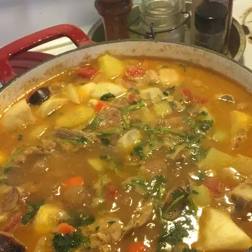

Sancocho

Description
Dominican sancocho is a hearty stew renowned for its rich flavors and cultural significance.
Made with a variety of meats such as chicken, beef, and pork, along with starchy vegetables like yams, plantains, and cassava, it offers a delicious blend of textures and tastes.
Enhanced with spices like cilantro, oregano, and garlic, it's a comforting dish enjoyed during special occasions and gatherings,
reflecting the vibrant culinary heritage of the Dominican Republic.
Ingredients
- ¼ cup dried oregano
- 5 cloves garlic, minced
- 2 teaspoons salt, divided
- 1 pound bone-in beef chuck
- 1 pound bone-in pork loin roast
- 5 chicken drumsticks, or more to taste
- 2 large lemons, juiced
- 2 large onions, quartered
- 2 tablespoons vegetable oil
- 1 tablespoon vinegar
- ½ cup vegetable oil
Steps
- Mash oregano, garlic, and 1 teaspoon salt in a bowl until well combined.
- Mix beef, pork, chicken, and lemon juice together in a large bowl; drain 1/2 of the liquid. Mix in onions, mashed garlic mixture, 2 tablespoons oil, and vinegar.
- Heat 1/2 cup vegetable oil in a large skillet over medium-high heat. Add meat mixture in three batches and cook until browned on all sides, 10 to 15 minutes per batch.
- Transfer browned meats to an 8-quart Dutch oven. Pour in 1/2 of the water, then add chicken broth, beef consommé, 2 bouillon cubes, and remaining 1 teaspoon salt. Bring to a boil, then reduce the heat to low, cover, and simmer until meats are more than halfway cooked through, about 40 minutes.
- Add pumpkin, sweet potatoes, eddeos, yuca, potatoes, plantains, corn, celery, carrots, bell pepper, cilantro, remaining bouillon cubes, and adobo seasoning to the Dutch oven. Increase the heat to medium and return to a boil. Reduce the heat to low and simmer, stirring in remaining water as needed in gradual increments to replace evaporated liquid, until root vegetables are soft and liquid has thickened, 1 to 2 hours.
- During the last 30 minutes of cooking, transfer beef, pork, and chicken to a cutting board. Let cool slightly, then remove bones and chop or shred meat. Return meat to the stew and finish cooking.
Go to homepage